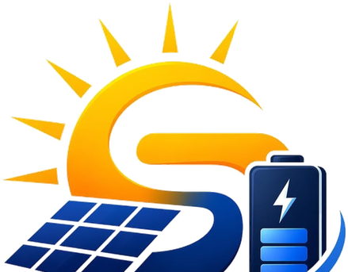

Descubra o número real em 30 segundos — sem cadastro e sem falar com vendedor. A gente calcula na tela com o sol e a tarifa do seu estado, já descontando o Fio B e a taxa mínima que ninguém te conta.
Dois campos. Resultado na hora, aqui mesmo na tela.
Fio B: 60% em 2026 → 75% em 1º/01/2027 (Lei 14.300). Quem instala antes aproveita mais anos com a fatia menor.
Nada de cadastro. Você vê o resultado antes de decidir se quer falar com a gente.
É o número real, já com o Fio B e a taxa mínima descontados. Costuma ser menor que os "95%" que prometem por aí — e é este que vai aparecer na sua fatura, sem surpresa depois.

Solar Fácil · solarfacill.com.brManda a foto da sua conta no WhatsApp. De graça e sem compromisso.
Enviar minha conta e receber o projeto realDo outro lado é quem instala, não um call center. Se você sumir, a gente não fica te perseguindo.
Por que esse número muda todo ano? Entenda o Fio B →Manda a foto da sua conta de luz no WhatsApp. Em até 1 dia útil devolvemos o projeto real, com o orçamento detalhado — de graça e sem compromisso.
A energia solar no Brasil virou um mercado de promessa. "Até 95%", "conta zero", "manutenção zero". São frases boas de anúncio e ruins de contrato — e o cliente descobre isso depois, quando a primeira conta chega, ou pior: quando precisa de suporte e ninguém atende.
A Solar Fácil existe por dois motivos, e nós os escrevemos aqui porque queremos ser cobrados por eles.
Vender energia solar é fácil. O difícil aparece nos vinte e cinco anos seguintes: a geração que caiu, o inversor que travou, a dúvida na conta, a troca de titularidade. É aí que a maior parte do mercado some — e é aí que a gente quer ser encontrada. Quem instalou é quem atende. Não existe "fale com a equipe responsável": a equipe responsável somos nós, e continua sendo depois que o dinheiro entrou.
Justo não é o mais barato — e a gente faz questão dessa diferença. O mais barato do Brasil existe: é o que usa estrutura vagabunda, corta a visita técnica, some na homologação e devolve o problema pra você em três anos. Justo é o preço certo pelo serviço inteiro, com tudo dentro e nada escondido: equipamento, estrutura, mão de obra, projeto, homologação, ART e pós-venda. Tudo item por item, dito antes de você assinar. E se algo mudar no caminho — um telhado que pede reforço, uma peça que chegou diferente — você fica sabendo antes de a gente fazer, e com o motivo. Surpresa é na fatura dos outros.
É por isso que a primeira coisa que você encontra no nosso site não é um formulário — é uma conta. O simulador aqui de cima calcula sua economia na tela, antes de pedir seu telefone, e já desconta tudo que os outros escondem. Às vezes o número é menor do que você esperava. Preferimos que ele apareça agora, de graça, do que daqui a três meses, com o sistema já no seu telhado.
No fim, as duas buscas são a mesma: fazer a energia solar deixar de ser uma aposta e voltar a ser o que ela sempre foi na matemática — uma conta que fecha, com alguém do outro lado da linha quando você precisar.
Não somos a maior do Brasil. Somos a que te trata como adulto.
A concorrência chama de "simulador" um formulário que só coleta seu contato e devolve uma ligação de vendedor. Aqui a conta acontece na tela. Você só fala com a gente se quiser.
Quem visita seu telhado, quem instala e quem atende no pós-venda são as mesmas pessoas. Ninguém some depois da assinatura porque "a equipe era de outra empresa".
Você manda a foto da conta, a gente devolve o dimensionamento e o preço em até um dia útil. Sem visita obrigatória pra "poder passar o valor".
Todo sistema sai com monitoramento. A diferença é que quem acompanha é a nossa equipe — se sua geração cair, você recebe nossa mensagem antes de perceber na conta.
Prazo de instalação, prazo de homologação, o que acontece se atrasar e o que a garantia cobre — tudo escrito em frase que se entende, na primeira leitura.
Porque desde a Lei 14.300 esse número, na prática, quase nunca acontece. Preferimos te contar agora do que na hora da instalação.
A palavra que sustenta a promessa é "até". Ela funciona no anúncio e some no orçamento. O que costuma ficar de fora: a taxa mínima que a distribuidora cobra mesmo se você gerar toda a energia do mundo, e o Fio B, o pedágio que você paga pela energia que joga na rede — e que sobe todo ano até 2029.
O simulador aqui de cima já tira a taxa mínima e já aplica o Fio B do ano corrente. O número que aparece é o que sobra de verdade no seu bolso. Costuma ser menor que 95% — e ainda assim costuma se pagar em poucos anos. Economia real vende melhor que promessa redonda.
A Lei 14.300/2022 acabou com a compensação integral. Quem instala hoje paga uma fatia do Fio B sobre a energia injetada na rede, e essa fatia cresce até travar em 2029. Entender isso muda uma decisão importante: quanto antes você instala, mais anos você aproveita com a fatia menor.
Cada ano que você espera é um ano de economia menor — e uma conta de luz cheia que continua subindo pela ANEEL. Instalar em 2027 é começar já no degrau de 75%.
Se você leu a seção acima, já entendeu o problema. A bateria é a resposta dele — e ela fica mais valiosa a cada ano que o Fio B sobe.
Um sistema comum desliga junto com a rua — é norma de segurança, pra não eletrocutar quem conserta o poste. Com bateria, sua casa continua de pé no apagão: geladeira, internet, luz, bomba d'água. Para quem trabalha em casa ou mora onde falta energia, esse costuma ser o motivo real da compra — a economia vira bônus.
As baterias de lítio (LiFePO₄) aguentam milhares de ciclos contra algumas centenas das de chumbo, podem ser descarregadas quase por completo sem estragar, não pedem manutenção, não soltam gás e ocupam menos espaço. Custam mais na compra e menos por ano de uso — que é a conta que importa.
Bateria não é upgrade automático. Ela resolve problemas específicos, e a gente prefere falar isso antes do que vender a mais.
Manda sua conta e conta pra gente como é sua rotina — se você fica em casa de dia, se falta luz aí. A gente calcula com e sem bateria e mostra as duas contas.
Cinco etapas. Você acompanha todas pelo WhatsApp.
Foto da conta de luz no WhatsApp. Só isso. Leva 10 segundos.
Em 1 dia útil você recebe o dimensionamento e o orçamento, item por item.
A gente sobe no telhado, confere estrutura e padrão de entrada, e confirma o projeto.
Time próprio. Residência padrão fica pronta em 1 a 3 dias, com a casa limpa no fim.
Cuidamos do processo junto à distribuidora até o medidor novo entrar e a economia começar.
Manda a foto da sua conta no WhatsApp. Em 1 dia útil você recebe o projeto e o orçamento. Se não fizer sentido pra você, a gente mesma fala.
Esperar tem preço: a tarifa sobe todo ano pela ANEEL e o Fio B vai de 60% (2026) pra 75% em 2027. Cada mês parado é uma conta cheia que não volta.